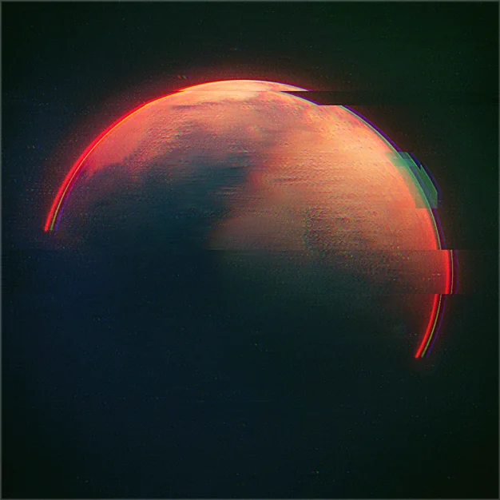
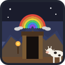
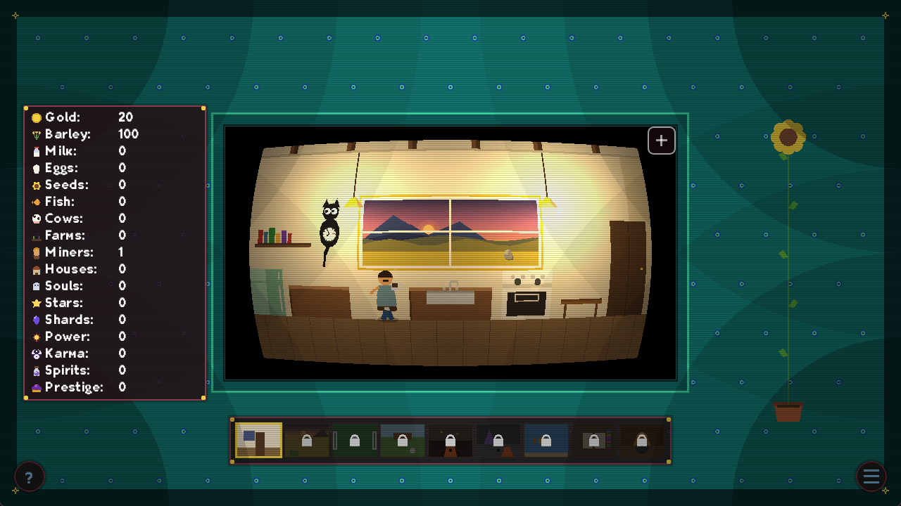
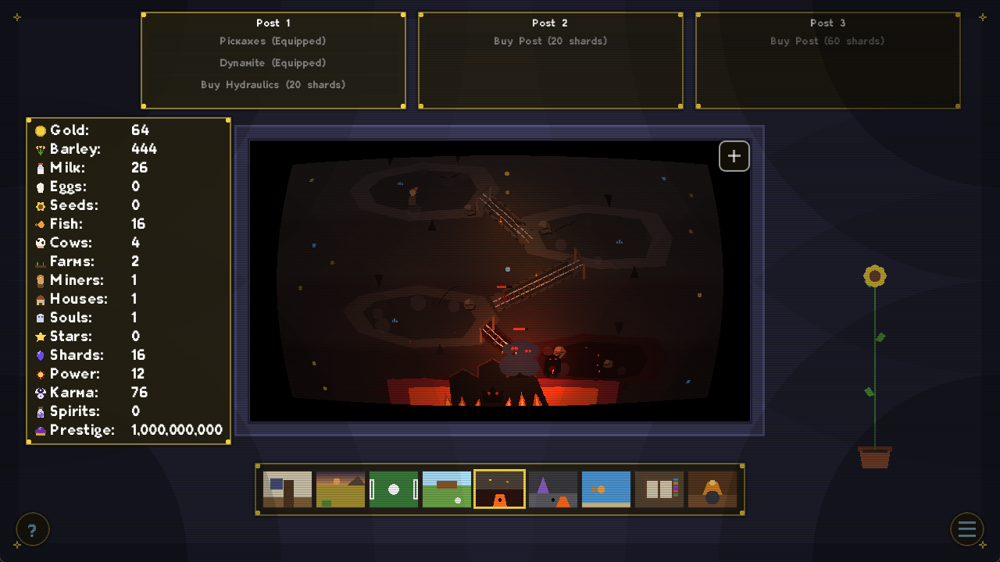

mendlogames
A small indie studio building strange, cozy, retro-flavored games.

Miners, Moos & Miracles
An idle/incremental farm-and-adventure game with a retro CRT-styled shell — tend your homestead, then dive into a handful of wildly different mini-games along the way.
Wishlist on SteamAbout the game
Miners, Moos & Miracles is built around a shared game shell with a nostalgic CRT-styled UI. Manage a small homestead — gold, barley, milk, eggs, and more — then hop between a handful of themed mini-games tied together by the same world.
- Dark Mine side-scrolling demon-fighting
- Cooking whip up dishes for the homestead
- Cow Ball the barnyard's favorite sport
- Chicken Coop keep the flock happy
- Wardrobe customize your character
Screenshots


More on the way
Miners, Moos & Miracles is just the beginning — mendlogames has more games in development. Follow along for updates.